Next: Shifts and phase changes
Up: Properties of Fourier transforms
Previous: Properties of Fourier transforms
Contents
Index
Let 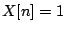 for all  (this repeats with any desired integer period
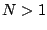). From the preceding discussion, we expect to find that
(this repeats with any desired integer period
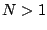). From the preceding discussion, we expect to find that
We will often need to know the answer for non-integer values of 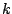 however,
and for this there is nothing better to do than to calculate the value
directly:
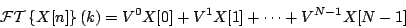
where 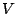 is, as before, the unit magnitude complex number with argument
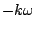. This is a geometric series; as long as 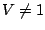 we get:
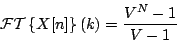
We now symmetrize the top and bottom in the same way as we earlier did in
Section 7.3. To do this let:
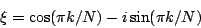
so that 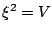. Then factoring appropriate powers of out of the
numerator and denominator gives:
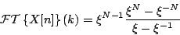
It's easy now to simplify the numerator:
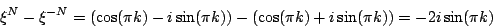
and similarly for the denominator, giving:
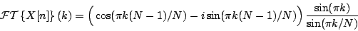
Whether 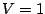 or not, we have
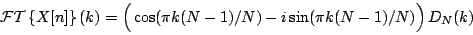
where 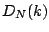, known as the
Dirichlet kernel,
is defined as
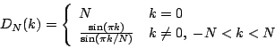
Figure 9.1 shows the Fourier transform of , with 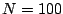. The
transform repeats every 100 samples, with a peak at 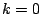, another at
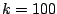, and so on. The figure endeavors to show both the magnitude and phase
behavior using a 3-dimensional graph projected onto the page. The phase
term
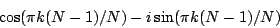
acts to twist the values of
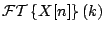 around
the axis with a period of approximately two. The Dirichlet kernel
, shown in Figure 9.2, controls the magnitude of
. It has a peak, two units wide, around
. This is surrounded by one-unit-wide
sidelobes,
alternating in sign and gradually decreasing in magnitude as increases or
decreases away from zero. The phase term rotates by almost 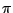 radians
each time the Dirichlet kernel changes sign, so that the product of the
two stays roughly in the same complex half-plane for 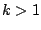 (and in the
opposite half-plane for 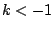). The phase rotates by almost 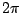
radians over the peak from 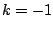 to 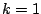.
Figure 9.1:
The Fourier transform of a signal consisting of all ones. Here
N=100, and values are shown for ranging from -5 to 10. The result
is complex-valued and shown as a projection, with the real axis pointing up the
page and the imaginary axis pointing away from it.
| 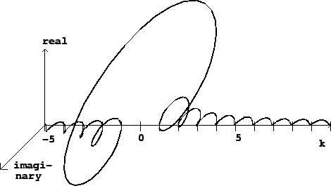 |
Figure 9.2:
The Dirichlet kernel, for  = 100.
= 100.
| 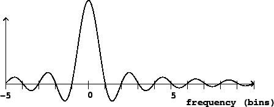 |
Next: Shifts and phase changes
Up: Properties of Fourier transforms
Previous: Properties of Fourier transforms
Contents
Index
Miller Puckette
2006-12-30